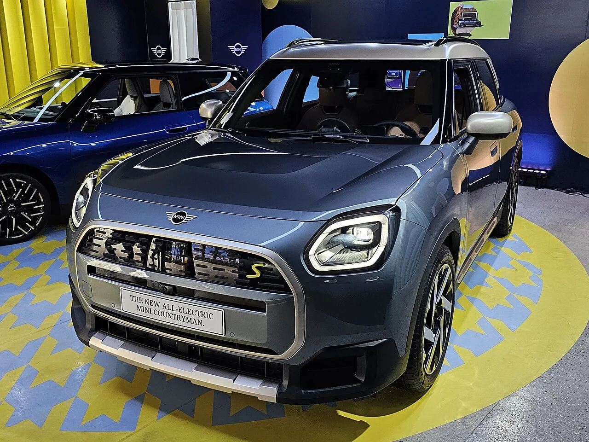
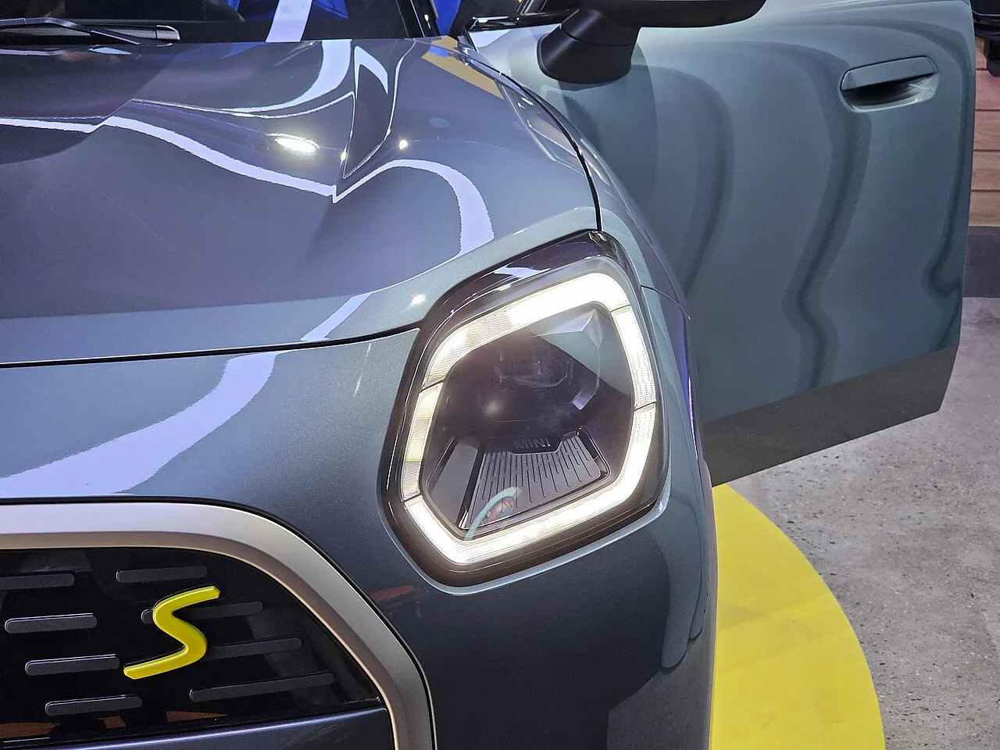
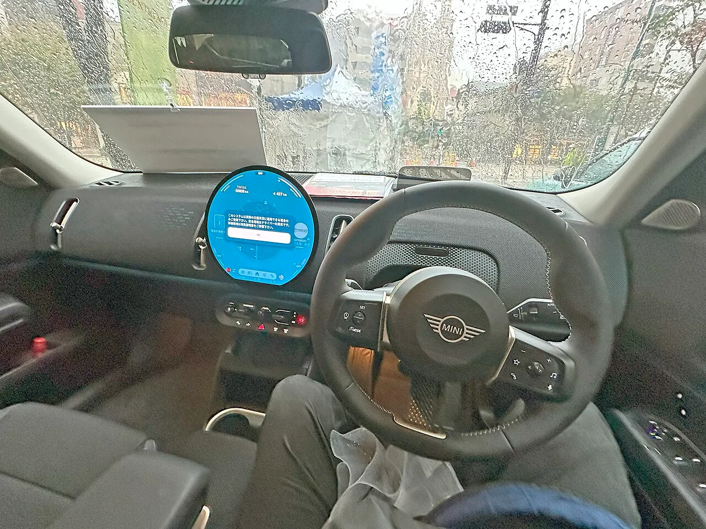
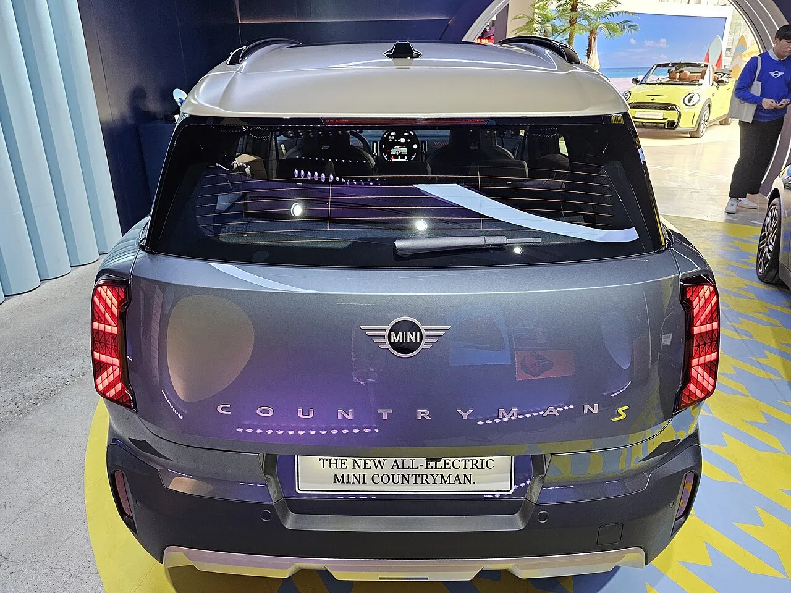

▲ 신형 전기 미니 컨트리맨(U25). 배터리 용량은 그대로 두고 효율만 끌어올렸다
미니 코리아가 에너지 효율을 개선한 신형 전기 컨트리맨을 국내 출시했습니다. 통상 전기차의 주행거리가 늘었다는 소식이 나오면 그 이유는 대부분 하나입니다. 배터리를 더 넣었기 때문입니다. 그런데 이번 컨트리맨은 다릅니다. 배터리 총용량 66.5kWh는 이전과 완전히 동일합니다. 그런데도 1회 충전 주행거리는 E 모델 기준 349km에서 381km로 32km 늘었습니다. 셀 하나 더 넣지 않고 어떻게 이게 가능했는지, 그 안을 들여다봤습니다.
1. 늘어난 건 거리, 그대로인 건 용량
먼저 숫자를 정리해 보겠습니다. 후륜구동 단일모터인 E 모델은 복합 전비 5.3km/kWh, 1회 충전 주행거리 381km입니다. 기존 349km에서 32km가 늘었습니다. 사륜구동 듀얼모터인 SE ALL4는 복합 전비 5.0km/kWh에 361km로, 기존 326km 대비 35km 늘었습니다. 개선폭으로 따지면 각각 9.2%, 10.7%입니다.
출력은 이전과 같습니다. E가 204마력에 25.5kg·m로 0→100km/h 8.6초, SE ALL4가 313마력에 50.4kg·m로 5.6초입니다. 즉 성능은 유지한 채 효율만 10% 안팎 끌어올린 개선입니다. 통상 주행거리를 늘리려면 배터리를 키우거나(무게·원가 증가) 출력을 낮추는(상품성 하락) 방법을 쓰는데, 이번에는 둘 다 건드리지 않았다는 점이 특징입니다.
| 항목 | E | SE ALL4 |
|---|---|---|
| 구동방식 | 후륜구동 | 사륜구동 |
| 최고출력 | 204마력 | 313마력 |
| 최대토크 | 25.5kg·m | 50.4kg·m |
| 0→100km/h | 8.6초 | 5.6초 |
| 복합 전비 | 5.3km/kWh | 5.0km/kWh |
| 주행거리 | 381km | 361km |
| 기존 대비 | +32km | +35km |

▲ 전기 컨트리맨의 전면부. 막힌 그릴과 다듬어진 하단 공기 흐름이 공기저항계수 0.26을 만든다
2. 첫 번째 열쇠 — 반도체를 실리콘에서 실리콘 카바이드로
이번 개선의 핵심 부품은 실리콘 카바이드(SiC) 인버터입니다. 인버터는 배터리에서 나오는 직류를 모터가 쓰는 교류로 바꿔주는 장치입니다. 전기차에서 배터리와 모터 사이를 오가는 모든 전력이 이 부품을 통과하기 때문에, 여기서 생기는 손실은 곧바로 주행거리 손실이 됩니다.
기존 인버터는 대부분 실리콘 기반 IGBT라는 반도체 소자를 씁니다. 전기를 끊고 잇는 스위칭을 초당 수천 번 반복하는데, 그때마다 열이 발생합니다. 실리콘 카바이드는 실리콘에 탄소를 결합한 화합물 반도체로, 같은 전력을 처리할 때 발생하는 손실이 눈에 띄게 적습니다. 더 빠른 스위칭이 가능해 부품을 작고 가볍게 만들 수 있고, 열이 덜 나니 냉각 장치의 부담도 줄어듭니다.
체감이 가장 큰 구간은 도심 저속·저부하 주행입니다. 고속으로 달릴 때는 인버터 손실보다 공기저항이 압도적으로 크지만, 신호와 정체가 반복되는 도심에서는 전체 소비 전력이 작아 인버터 손실의 비중이 상대적으로 커집니다. 컨트리맨의 주 사용 환경이 도심이라는 점을 생각하면, 미니가 여기에 먼저 손을 댄 것은 합리적인 선택입니다.
| 항목 | 실리콘 IGBT | SiC |
|---|---|---|
| 전력 손실 | 상대적으로 큼 | 작음 |
| 발열 | 많음 | 적음 |
| 스위칭 속도 | 느림 | 빠름 |
| 크기·무게 | 큼 | 소형·경량화 유리 |
| 원가 | 저렴 | 비쌈 |
| 이득이 큰 구간 | - | 도심 저속·저부하 |
3. 두 번째 열쇠 — 안 쓰던 배터리를 꺼내 썼다
두 번째 변화는 조금 더 미묘합니다. 총용량 66.5kWh는 그대로인데, 실제 사용 가능 용량이 65.2kWh로 확대됐습니다.
전기차 배터리는 표시된 용량을 전부 쓰지 않습니다. 완전히 채우거나 완전히 비우는 상태를 반복하면 셀 수명이 급격히 짧아지기 때문에, 제조사는 위아래로 여유분(버퍼)을 남겨둡니다. 사용자가 계기판에서 100%를 봐도 실제 셀은 100%가 아니고, 0%가 떠도 완전 방전은 아닙니다. 이 버퍼를 얼마나 남기느냐는 순전히 제조사의 판단입니다.
미니는 이 버퍼를 줄여 쓸 수 있는 용량을 늘렸습니다. 여기에는 분명한 트레이드오프가 있습니다. 버퍼가 얇아질수록 배터리는 더 극단적인 충전 상태에 자주 노출되고, 이론적으로 장기 열화에 불리합니다. 미니가 이 선택을 했다는 것은 배터리 관리 시스템(BMS)의 제어 정밀도나 셀 자체의 내구 데이터가 그만큼 축적됐다는 뜻으로 읽힙니다. 실제로 이 판단이 옳았는지는 5년, 10년 뒤 잔존 용량으로 확인될 문제이고, 지금 시점에서는 확인할 방법이 없습니다. 다만 소비자 입장에서 배터리 보증 조건에 변화가 있는지는 계약 전 확인해 둘 만한 대목입니다.

▲ 신형 컨트리맨의 헤드램프. 저마찰 휠 베어링 등 눈에 보이지 않는 곳의 개선이 함께 이뤄졌다
4. 세 번째 열쇠 — 굴러가는 저항과 공기저항 0.26
나머지 두 가지는 물리적인 저항을 줄이는 작업입니다. 하나는 저마찰 휠 베어링입니다. 바퀴가 돌 때 베어링 내부에서 발생하는 마찰을 줄인 것으로, 개별 효과는 작지만 주행 시간 전체에 걸쳐 항상 작동하는 손실이라는 점에서 누적 효과가 있습니다.
다른 하나는 공기저항계수 0.26입니다. 컨트리맨처럼 키가 크고 각진 SUV에서 0.26은 상당히 잘 다듬은 수치입니다. 공기저항은 속도의 제곱에 비례해 커지기 때문에, 시속 100km 이상 고속도로 주행에서는 전체 에너지 소비의 절대다수를 차지합니다. 앞서 이야기한 SiC 인버터가 도심에서 이득을 낸다면, 이쪽은 고속 구간을 담당하는 셈입니다. 두 개선이 서로 다른 속도 영역을 나눠 맡으면서 복합 전비 전체를 밀어 올린 구조입니다.

▲ 컨트리맨 실내의 원형 OLED 디스플레이. 사진은 우핸들 사양
5. 3등급에서 2등급으로 — 이게 지갑에 미치는 영향
이번 개선으로 에너지소비효율 등급이 3등급에서 2등급으로 올라갔습니다. 마케팅용 배지처럼 보이지만, 국내 전기차 구매에서 이 숫자는 실제 돈과 연결됩니다.
국고 보조금은 정액이 아니라 성능에 따라 차등 지급되며, 산정 항목에 1회 충전 주행거리와 전비가 모두 포함됩니다. 즉 주행거리 32km 증가와 전비 개선은 각각 별개로 보조금 산식에 유리하게 작용할 여지가 있습니다. 다만 보조금 산정 기준은 매년 환경부 공고로 바뀌고 차종별 최종 지급액도 공고 이후에 확정되므로, 이번 개선이 실제로 몇 만 원의 차이를 만드는지는 해당 연도 공고와 지자체 보조금을 함께 확인해야 합니다. 여기에 파노라마 글라스 선루프가 전 트림 기본으로 확대된 점도 실구매가 관점에서 함께 따져볼 부분입니다.

▲ 전기 컨트리맨 후면. 국내 판매 가격은 5,890만 원부터 시작한다
6. 가격 — 5,890만 원의 자리
국내 판매 가격은 E 클래식 5,890만 원, SE ALL4 페이버드 6,350만 원, SE ALL4 JCW 6,610만 원입니다. 여기에 국고 및 지자체 보조금이 적용되면 실구매가는 지역에 따라 낮아집니다.
같은 값이면 국산 전기 SUV 쪽이 배터리 용량도 크고 주행거리도 길다는 점은 부인하기 어렵습니다. 381km라는 수치는 2026년 기준으로 특별히 앞선 숫자가 아닙니다. 결국 이 차의 판단 기준은 주행거리 표에서 몇 번째에 오느냐가 아니라, 미니라는 브랜드와 실내 디자인, 그리고 도심에서 실제로 나오는 전비를 어떻게 평가하느냐에 달려 있습니다. 다만 배터리를 키우지 않고 효율만으로 10% 가까운 개선을 만들어냈다는 접근 자체는, 값비싼 셀을 계속 더 넣는 방식이 한계에 부딪히고 있는 지금 시점에서 눈여겨볼 만한 방향입니다.